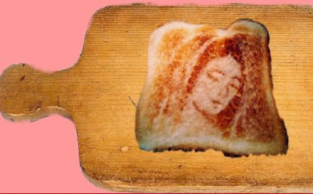

...
Υπάρχει μια θλίψη όταν ετοιμάζεις τις βαλίτσες.
Σκέφτεσαι αυτά που θα βάλεις, αλλά και αυτά που θα αφήσεις.
Υπάρχουν όμως και διάφοροι τρόποι να ετοιμάσεις τη βαλίτσα.
Αν πηγαίνεις διακοπές, στριμώχνεις όσα περισσότερα μπορείς,
για να μη σου λείψουν οι ανέσεις του σπιτιού.
Αν ξεχάσεις κάτι…θα το βρεις όταν επιστρέψεις.
Όταν μετακομίζεις, παίρνεις τα πάντα.
Είναι και ευκαιρία να κάνεις και ένα ξεκαθάρισμα.
Να πετάξεις πράγματα που πάντα ήσαν εκεί, αλλά δεν ξέρεις πια γιατί.
Όταν φεύγεις, επειδή χωρίζεις, είναι λίγα αυτά που παίρνεις μαζί και
δεν σε ενδιαφέρει το τι θα αφήσεις πίσω σου.
Απλά φεύγεις. Το περιεχόμενο της βαλίτσας θα το δεις μετά και
αν προσέξεις ότι ξέχασες πράγματα σημαντικά...
δεν θα στεναχωρηθείς τόσο.
Η φυγή σου...τα επισκιάζει όλα.
Καταλαβαίνεις ότι τη βαλίτσα την ετοίμαζες από καιρό,
απλά τώρα την είδες δίπλα στην πόρτα.
Υπάρχει όμως και μια άλλη περίπτωση.
Εκείνη που απλά φεύγεις όσο μπορείς πιο μακριά.
Τι θα πάρεις μαζί σου;
Και γιατί φεύγεις;
Η σύγχυση γίνεται χειρολαβή και κατεβαίνεις τη σκάλα.
Η ανάσα σου γίνεται βαριά από τα χρόνια που είναι διπλωμένα
άτακτα μέσα στη βαλίτσα σου και δεν έχεις όρεξη να την ανοίξεις.
Κανένας προορισμός δεν μπορεί να σε κάνει καλά.
Μπερδεύεσαι όλο και περισσότερο τελευταία.
Δεν το λες στους φίλους σου ότι χάνεις τα λογικά σου,
γιατί φοβάσαι μήπως πουν κάτι που θα αλλάξει μια εικόνα…
μια λέξη…μια στιγμή.
Η βαλίτσα σου έχει πράγματα που δεν βρίσκουν ποτέ τη θέση τους.
Οι βαλίτσες μου είναι όλες μαύρες.
Δεν ξέρω γιατί...απλά τώρα το πρόσεξα.
Ήρθε η στιγμή να τις γεμίσω ξανά και να φύγω.
Χάνομαι...με σύντροφο τη φυγή.
Πονάω τον εαυτό μου λίγο πάρα πάνω κάθε μέρα.
Πονάω και άλλους...
Είμαι χαρούμενος που είμαι εδώ.
Αυτή η χώρα είναι απέραντη και απέραντος είναι και ο ουρανός εδώ.
Τα λουλούδια…
Δεν θα με πείραζε όμως να φύγω και αυτή τη στιγμή.
Δεν είναι το περιβάλλον που σε κρατάει ζωντανό.
Δεν με νοιάζει το που θα βρίσκομαι...αλλά το πως.
Ανοίγω και κλείνω τις βαλίτσες,
χωρίς να βάζω κάτι μέσα.
Αυτή είναι και η δουλεία της βαλίτσας. Ο σκοπός της.
Να της βάζεις πράγματα μέσα και εκείνη αναλαμβάνει
να σου τα δώσει ξανά.
Έφτασε όμως η στιγμή να την ετοιμάσω και θα φύγω ξανά.
Μόλις αποφασίσω τι θα πάρω μαζί μου και τι θα αφήσω…θα φύγω.
Θα κλείσω όλες τις πόρτες...και θα φύγω...
εγώ, οι βαλίτσες μου...και ότι θα έχουν μέσα.
Όσο για αυτά που θα αφήσω πίσω...θα λυπηθώ.
Κουράστηκα όμως και δεν μπορώ να σηκώνω πολλά βάρη.
Και φωτογραφίες και λόγια πολλά θα αφήσω πίσω.
Είναι αλήθεια αυτό που λέει το τραγούδι...
''όταν κοιτάς τόσο καιρό μια φωτογραφία, νομίζεις ότι ζωντανεύει''.
Τελικά, όπως φαίνεται, μόνο χώρο έπιαναν τόσο καιρό.
Δεν είναι και ανάγκη να είναι γεμάτες μέχρι πάνω.
Γνωρίζω που θα πάω...γνωρίζω και το πότε.
Οι βαλίτσες περιμένουν να κολλήσω τα ταμπελάκια
και είμαστε έτοιμοι.
Άλλο ένα ταξίδι λοιπόν...να βρω ξανά ένα σπίτι.
Κουράστηκα όμως και οι βαλίτσες το ίδιο.
Λέμε να στεριώσουμε πια.
Για αυτό...ένα τελευταίο έλεγχο στο τι θα μπει στις βαλίτσες...
κλειδαριές...εισιτήριο...διαβατήριο...
Μια ματιά πίσω...και μετά μόνο μπροστά.
Αφήνουμε πίσω όσους μας αφήνουν πίσω...
Καλό τέλος...και αρχή.
[download mp3: pictures-of-you] | |
-Όταν ένας ανθρωποφάγος τρώει με πιρούνι και μαχαίρι, αυτό είναι πρόοδος ;
-Υπάρχουν χορτοφάγοι ανάμεσα στους κανίβαλους ;
Lec Stanislaw Jerzy | |
Προφητεύω το τέλος του κανιβαλισμού. Ο άνθρωπος θα αισθάνεται αηδία για τον άνθρωπο.
Lec Stanislaw Jerzy | |
Ο τρωγλοδύτης δεν ήταν τρωγλοδύτης. Στεκόταν στο ύψος του πολιτισμού της εποχής του.
Lec Stanislaw Jerzy | |
Μην παραδίνεστε ποτέ στην απόγνωση – σπάνια κρατάει τις υποσχέσεις της.
Lec Stanislaw Jerzy | |
Τί είναι χάος ; Είναι εκείνη η τάξη που καταστράφηκε κατά την δημιουργία του κόσμου.
Lec Stanislaw Jerzy | |
Ας μην ξεχνάμε ότι και τα βακτηρίδια - από την άλλη μεριά του μικροσκοπίου – μας παρατηρούν.
Στάνισλαβ Γέρζι Λέτς | |
Δείξτε μου έναν λογικό άνθρωπο και θα σας τον θεραπεύσω.
Carl Jung
| |
Υπάρχουν αλήθειες τόσο νόστιμες και διασκεδαστικές
που είναι καλύτερες και από ψέματα.
Θερβάντες
| |
Δεν έχω προκαταλήψεις τους μισώ όλους εξίσου.
Fields
| |
Ο Διόνυσος φθάνει στη Θήβα μεταμφιεσμένος ως πλάνης ιερέας, ντυμένος σα γυναίκα, με μακριά μαλλιά ως τη μέση, μαύρα ανατολίτικα μάτια, ύφος γόη και είναι δεινός ρήτορας....έχει δηλαδή όλα τα χαρακτηριστικά που ενοχλούν και εξαγριώνουν τον νεαρότατο βασιλιά της Θήβας τον Πενθέα. Γύρο από τον σχεδόν συνομήλικο με τον βασιλιά ιερέα περιφέρεται ένας θίασος από ανατολίτισσες γυναίκες, κάνουν σαματά, κάθονται, τρώνε και κοιμούνται στο ύπαιθρο και στους δρόμους της Θήβας. Ο Πενθέας στο μεταξύ γίνεται έξαλλος. Τι γυρεύει αυτός ο περιπλανώμενος θίασος ; Θέλει να τους διώξει. Ο Διόνυσος θέλει να σπείρει τον σπόρο του που θα δημιουργήσει μια καινούργια διάσταση της καθημερινής ζωής όλων ανεξαιρέτως των ανθρώπων. Για το λόγο αυτό, πρέπει να τρελάνει τις γυναίκες της Θήβας, τις κυράδες που είναι για τα καλά βολεμένες κοινωνικά ως σύζυγοι και μητέρες. Αυτές τις γυναίκες της Θήβας τρέλανε ο Διόνυσος με το παραλήρημά του.
Εγκαταλείπουν τα παιδιά τους, αφήνουν στη μέση τις δουλειές του σπιτιού, παρατούν τους άντρες τους και τρέχουν στα βουνά και τα δάση ντυμένες ανάρμοστα για καθώς πρέπει κυρίες κάνοντας ότι τρέλα τους περάσει από το μυαλό. Ο Πενθέας θυμώνει διπλά και διατάζει να συλλάβουν τις ανατολίτισσες γυναίκες της ακολουθίας του Διόνυσου θεωρώντας τες υπεύθυνες για το θηλυκό χάος που απλώθηκε στην πόλη, αλλά και τον ίδιο τον πλάνητα ιερέα, τον διαφθορέα ζητιάνο και διατάζει το στρατό να φέρει πίσω τις γυναίκες που επιδίδονται σε κάθε λογής ακολασία. Όλα αποτυγχάνουν, η ακολουθία του ιερέα βγαίνει από τη φυλακή χωρίς καμία δυσκολία και ο ίδιος ο Θεός στέκεται ήρεμος και γελαστός απέναντι στον Πενθέα. Οι στρατιώτες του του εξηγούν ότι οι γυναίκες αυτές έπαιρναν με πραότητα τα παιδιά των ζώων και τα θήλαζαν σαν να ήταν δικά τους παιδιά, ήταν σα να ζούσαν σε έναν άλλο κόσμο, όπου ανάμεσα σε όλα τα πλάσματα βασίλευε τέλεια αρμονία. Τα όρια είχαν καταργηθεί, άνθρωποι και ζώα ζούσαν μαζί. Ακόμα και η ίδια η γη έσμιγε μαζί τους. Μόλις χτύπαγε κάποια το θυρσό στο χώμα, ανάβλυζαν πηγές με καθάριο νερό, γάλα, κρασί. Η χρυσή εποχή αναβίωνε. Η πραότητα νικά τη βία, οι γυναίκες τους άνδρες, η άγρια φύση την πολιτική οργάνωση.
Jean Pierre Vernant
| |
Συγχαρητήρια: Ο εκπολιτισμός του μίσους.
Αμπρόουζ Μπήρς
| |
Όλες οι προτάσεις της λογικής λένε το ίδιο, δηλαδή τίποτα. Τα όρια της γλώσσας μου σημαίνουν και τα όρια του κόσμου μου. Η λογική γεμίζει τον κόσμο, τα όρια του κόσμου είναι και τα δικά της όρια. Αυτό που δεν μπορούμε να σκεφτούμε, αυτό δεν μπορούμε να το σκεφτούμε, και δεν μπορούμε να πούμε αυτό που δεν μπορούμε να σκεφτούμε. Αυτό που εννοούμε δεν λέγεται αλλά φανερώνεται.
Αισθανόμαστε πώς ακόμα και αν δοθούν απαντήσεις σε όλες τις δυνατές ερωτήσεις της επιστήμης τα προβλήματα της ζωής μας δεν θα τα έχουμε καν αγγίξει. Φυσικά δεν μένει πια καμία ερώτηση και αυτό ακριβώς είναι η απάντηση.
Η σωστή μέθοδος της φιλοσοφίας θα ήταν στην πραγματικότητα αυτή, να μη λέμε τίποτα εκτός από αυτό που μπορεί να ειπωθεί, δηλαδή προτάσεις των φυσικών επιστημών, δηλαδή κάτι που δεν έχει να κάνει σε τίποτα με την φιλοσοφία.
Για όσα δεν μπορεί να μιλάει κανείς, γι αυτά θα πρέπει να σωπαίνει.
WITTGENSTEIN
| |
σε περιμενουμε και οι δυο...θανο δεν ηθελα να σε πικρανω ακου το τραγουδακι..
[download mp3] | |
Όπως και να έχει το πράγμα πάντως δικέ μου...
δεν έχω τίποτα, που δεν θα διόρθωνε,
μια καλή μετενσάρκωση. | |
Αντωνη σε περιμενουμε ολοι οπως βλεπεις...
και φιλεεε.εχουμε αναγκη ετουτα τα δραματα
αυτοι οι μικροι θανατοι ειναι που μας κραταν ζωντανους...
μαυρες κωμωδιες... | |
Should I stay...
or should I go?
If I go...where I go...
no one will know.
[download mp3: the-cooltrane-quartet] | |
Με φοβερή επιτυχία διεξήχθη το Live... | |
Στήν φωτό : ο Μιχάλης κάνοντας stage diving... | |
Γυρίσαμε στον παγωμένο νότο... | |
Ο Γιώργος παίζοντας κρυφτό απο την Πελαγία στον εθνικό δρόμο. | |
...τα χρώματα...τα αρώματα...
η ησυχία...η ηρεμία...η γαλήνη...
[download mp3: itsnotunusual] | |

Ω Θεέ μου...τα λουλούδια...
[download mp3: 2525] | |
Η εμφανιση των lost bodies στην Θεσσαλονικη ειχε τα παντα.
Οργανωση...συχρονισμο...αψογη τεχνικη
βια...ερωτισμο...πλαστικοτητα και χαρη
αρμονια...ανωμαλια...ναθηκαμασουπα...ε ηταν μια ομορφια... | |
Ρε παιδιά...μπορώ να παίξω και εγώ μαζί σας;
Ε; Μπορώ;
Έλα ρε Θάνο.
Να παίξω;
Πες ρε Θάνο...να πάιξω;
Έχω και δικές μου κιθάρες.
Να πάιξω μαζί σας;
Λίγο μόνο.
25 κομμάτια.
Έλα ρε Θάνο.
Άσε με να παίξω και εγώ λιγάκι στη Θεσσαλονίκη.
Να παίξω;
Ε;
Ε;
Να παίξω; | |
Το live θα ανοίξουν οι Fun with Nuns.
Την αφίσα έφτιαξαν τα παιδιά από το blog : lost φίλοι bodies στη διεύθυνση : http://thelostbodies.blogspot.com/
μερσίν μποκούτ αδέρφια !!!!! | |
Ποιός είσαι επιτέλους ;
Μέρος από τη δύναμη που αιώνια θέλει το κακό και αιώνια κάνει το καλό.
Γκαίτε, Φάουστ.
| |
Πιστεύοντας ότι έχει καταλάβει το νόημα της ζωής ο Τσού Γιέν έφυγε από το μοναστήρι σε νεαρή ηλικία για να ταξιδέψει στην Κίνα. Πολλά χρόνια αργότερα γύρισε πίσω και ο παλιός του δάσκαλος τον ρώτησε : «Τσού Γιέν, πες μου τί κατάλαβες, ποιό είναι το νόημα της ζωής ;»
Ο Τσού Γιέν απάντησε : « Όταν δεν υπάρχουν σύννεφα πάνω από το βουνό, το φεγγάρι καθρεφτίζεται στα νερά της λίμνης.»
Ο δάσκαλος κοίταξε τον παλιό μαθητή του με θυμό.
«Γερνάς, τα μαλλιά σου άσπρισαν, λίγα δόντια σου έχουν απομείνει και ακόμα δεν έχεις καταλάβει τίποτα για τη ζωή»
Ο Τσού Γιέν χαμήλωσε το βλέμμα του και δάκρυα άρχισαν να κυλούν στο πρόσωπό του. Μετά από λίγο ρώτησε : «Σε παρακαλώ... πες μου για το νόημα της ζωής.»
«Όταν δεν υπάρχουν σύννεφα πάνω από το βουνό», απάντησε ο δάσκαλος, «το φεγγάρι καθρεφτίζεται στα νερά της λίμνης.»
Κινέζικο Κοάν
| |

Σημείο Μέγα της επιδοκιμασίας του θεού για την εκλογή του νέου αρχιεπισκόπου, η εμφάνιση της μορφής του Ιησού αλλά και της Παναγίας σε διάφορα κουφά μέρη !!!! | |
Σημείο Μέγα της επιδοκιμασίας του θεού για την εκλογή του νέου αρχιεπισκόπου, η εμφάνιση της μορφής του Ιησού αλλά και της Παναγίας σε διάφορα κουφά μέρη !!!! | |
Σημείο Μέγα της επιδοκιμασίας του θεού για την εκλογή του νέου αρχιεπισκόπου, η εμφάνιση της μορφής του Ιησού αλλά και της Παναγίας σε διάφορα κουφά μέρη !!!! | |
Σημείο Μέγα της επιδοκιμασίας του θεού για την εκλογή του νέου αρχιεπισκόπου, η εμφάνιση της μορφής του Ιησού αλλά και της Παναγίας σε διάφορα κουφά μέρη !!!! | |
Κτηνώδης δύναμη, ογκώδης άγνοια. | |
ΠΕΡΑΣΤΙΚΑ ΣΟΥ ΑΓΟΡΙ ΜΟΥ
Ο ΘΕΙΟΣ ΣΟΥ ΦΙΡΙΚΗΣ (το οργανο) | |
Δεν υπάρχει ιστορία
μόνο άγρια θηρία που πεινάν για εξουσία
όλη η γη, όλη η γη,
μικρή μεγάλη Ανατολή.
| |
Οι Βοιωτοί θυσιάζουν στους θεούς τα τεράστια χέλια της Κωπαϊδας, στεφανώνοντάς τα ακριβώς όπως τα άλλα ζώα που προσφέρονται για θυσία, προσευχόμενοι και ρίχνοντας χοντροαλεσμένο σιτάρι πάνω απο τα κεφάλια των χελιών.
Όταν ο ξένος απορεί για το έθιμο και ζητάει κάποιες πληροφορίες, οι Βοιωτοί απαντούν ότι πρέπει να τηρούν τα πατρογονικά έθιμα και οτι δεν χρειάζεται να δίνουν λογαριασμό για αυτό σε ξένους.
Ο Αντίγονος ο Καρίστιος στη διατριβή του «Περί λέξεως» λέει ότι οι Αλαιείς όταν έρθει η εποχή να ψαρέψουν τον τόνο και το ψάρεμα πάει καλά, θυσιάζουν τον πρώτο τόνο που πιάνουν στον Ποσειδώνα, οι δε Φασηλήτες θυσιάζουν παστά ψάρια.
Αθήναιου. Δειπνοσοφισταί. | |
Με χτύπησες τόσο δυνατά που παραλίγο να μου σπάσεις τη πλάτη.
Το κούτελό μου ιδρώνει και ο λαιμός μου στεγνός.
Με κρατάς εδώ για δέκα ολόκληρα χρόνια.
Μου λείπει το ουίσκι και η μπύρα μου.
Δεν έχω δει επισκέπτη από τότε που θυμάμαι.
Και με τον τρόπο που μου φέρεσαι ούτε θα ξανα δω.
Μου έσπασες το κεφάλι γιατί έφτυσα το σκύλο σου.
Δεν θα με κάνεις καλύτερο, απλά θα με κάνεις πιο σκληρό.
Το νερό σου βρωμάει γιατί έρχεται από ένα μπαρ.
Και το φαγητό που σερβίρεις δεν το τρώει ούτε σκύλος.
Κι αν με χτυπάς και προσπαθείς να με τσακίσεις για να δουλεύω για σένα
δεν θα σπάσεις ποτέ το πνεύμα μου ακόμα και αν το κορμί μου έχει μελανιάσει.
Στο μπράτσο μου έχω ένα ανυπόφορο πόνο.
Είναι δύσκολο να σκάβω χαντάκια αλυσοδεμένος.
Με κρατάς εδώ για δέκα ολόκληρα χρόνια.
Μου λείπει το ουίσκι και η μπύρα μου.
Μου έσπασες το κεφάλι γιατί έφτυσα το σκύλο σου.
Δεν θα με κάνεις καλύτερο, απλά θα με κάνεις πιο σκληρό.
Κι αν με χτυπάς και προσπαθείς να με τσακίσεις για να δουλεύω για σένα
δεν θα σπάσεις ποτέ το πνεύμα μου ακόμα και αν το κορμί μου έχει μελανιάσει.
[download mp3: black&blue] | |
Είμαι ο χώρος όπου βρίσκομαι
Noel Arnaud
| |

Φωτιά από σπίθα μικρή στο βουνό,
δάσος συχνά θαλερό ξεπαστρεύει.
Πίνδαρος
| |
Ο Νίτσε είναι ο πρώτος που υψώνει τη μαύρη σημαία του κουρσάρου στους ωκεανούς της Γερμανικής φιλοσοφίας. Πίσω του αφήνει εκκλησίες συλημένες, χιλιόμετρα από βεβηλωμένα ιερά, βωμούς γκρεμισμένους, πεποιθήσεις ρημαγμένες, ένα φάρο όλο τόλμη και δύναμη. Όμως ποτέ το βλέμμα του δεν γυρίζει πίσω, ούτε για να απολαύσει όσα έχει αποκτήσει, ούτε για να τα ιδιοποιηθεί. Το άγνωστο αυτό που ποτέ δεν εξερευνήθηκε είναι η περιοχή του. Καθώς δεν πιστεύει σε κανένα δόγμα, καθώς δεν έχει ορκιστεί υποταγή σε καμία χώρα, καθώς υψώνει στο κατάρτι του ανάποδα τη μαύρη σημαία της ανηθικότητας και κατευθύνεται μονάχα στο ιερό άγνωστο, στην αιώνια αβεβαιότητα.
Stefan Zweig
| |
Ο ωκεανός κυλάει από φόβο.
Du Bartas
| |
Μέσα μου ένας άνθρωπος πεθαίνει
Κάθε φορά που κάπου ένας άνθρωπος πεθαίνει
Αφανισμένος από των άλλων το φόβο και τη φούρια.
Ένας που πάσκισε περισσότερο και από άνθρωπος να γίνει
Πάνω στου φθινοπώρου τους δίσκους της στιλπνότητας.
Την αγχώδη αναζήτηση
Της διάστασης μιας ολόκληρης αλήθειας..
Μέσα μου ένας άνθρωπος πεθαίνει
Κάθε φορά που το όπλο ενός ανθρώπου έναν άνθρωπο σκοτώνει
Και ο θάνατος αυτός γκρεμίζει
Ότι μέσα μου είχα υψώσει
Την υπερηφάνεια να είμαι άνθρωπος.
Όταν στον Πλάτωνα ακούω οτι πέθανε ο Σωκράτης,
Ακόμα και τη γεύση του νερού
Γιατί και πάλι όλα αμφισβητούνται
Όλα
Και ξαφνικά μας στραγγαλίζουν
Πυρπολημένες της ύπαρξης οι ρίζες
Και τίποτα πια δεν νοιώθει σιγουριά
Ούτε ο σπόρος στη σπορά
Ούτε το διαμάντι μέσα στο βράχο
Ούτε το αστέρι στο σκοτάδι.
Torres Bodet
| |
|
35 readers online
|